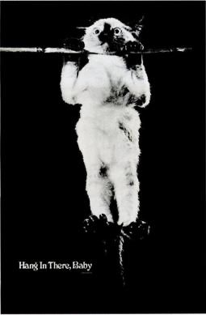
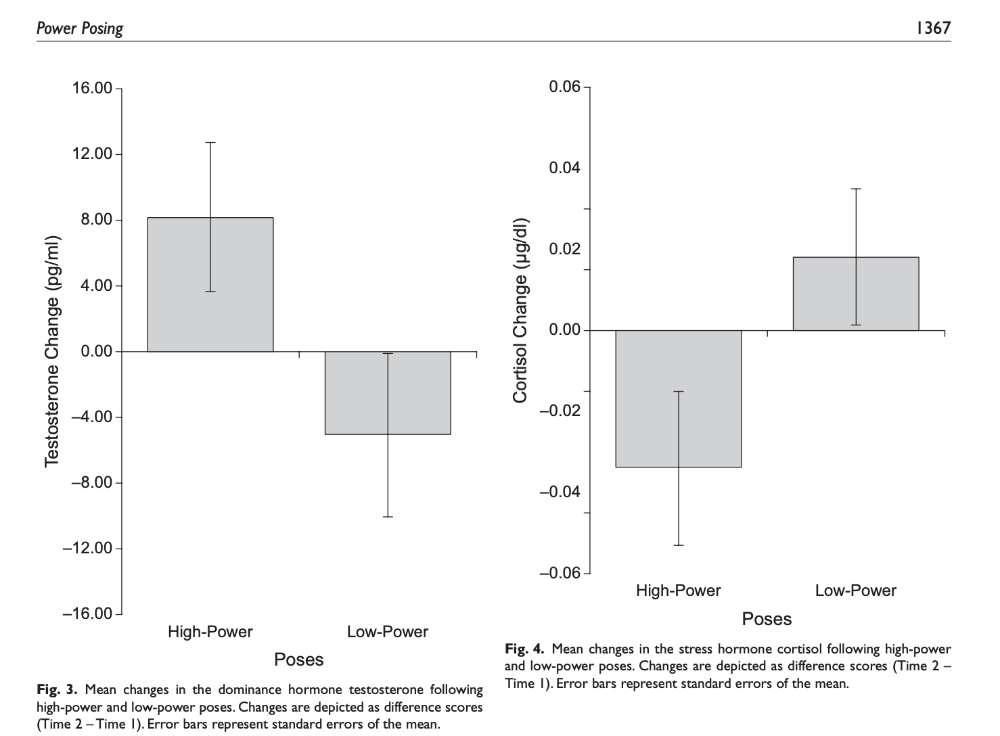
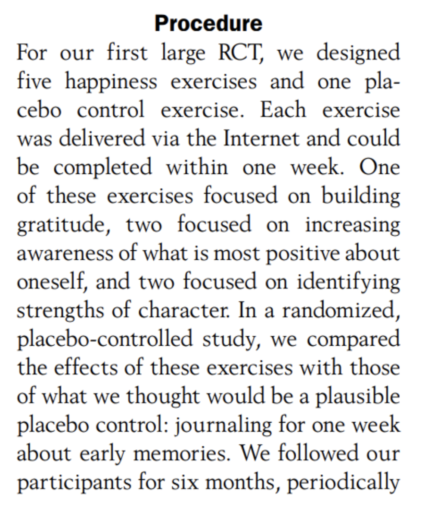
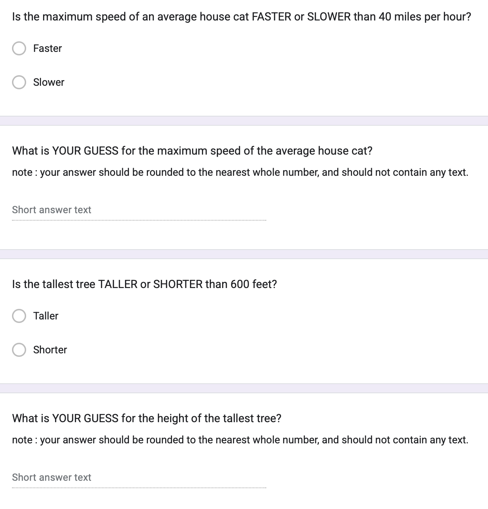
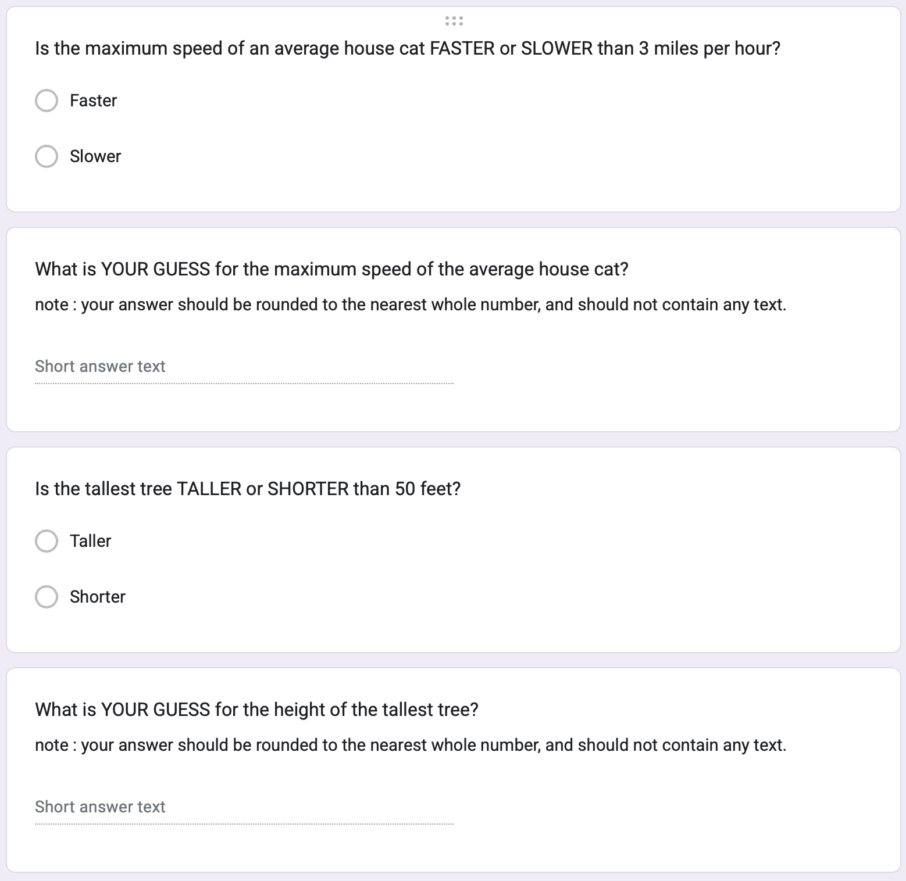
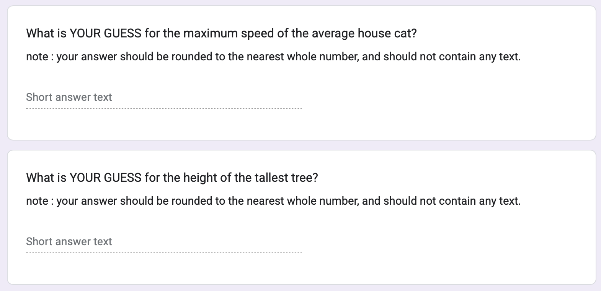
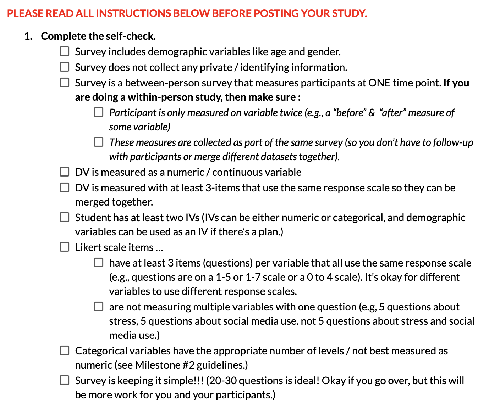
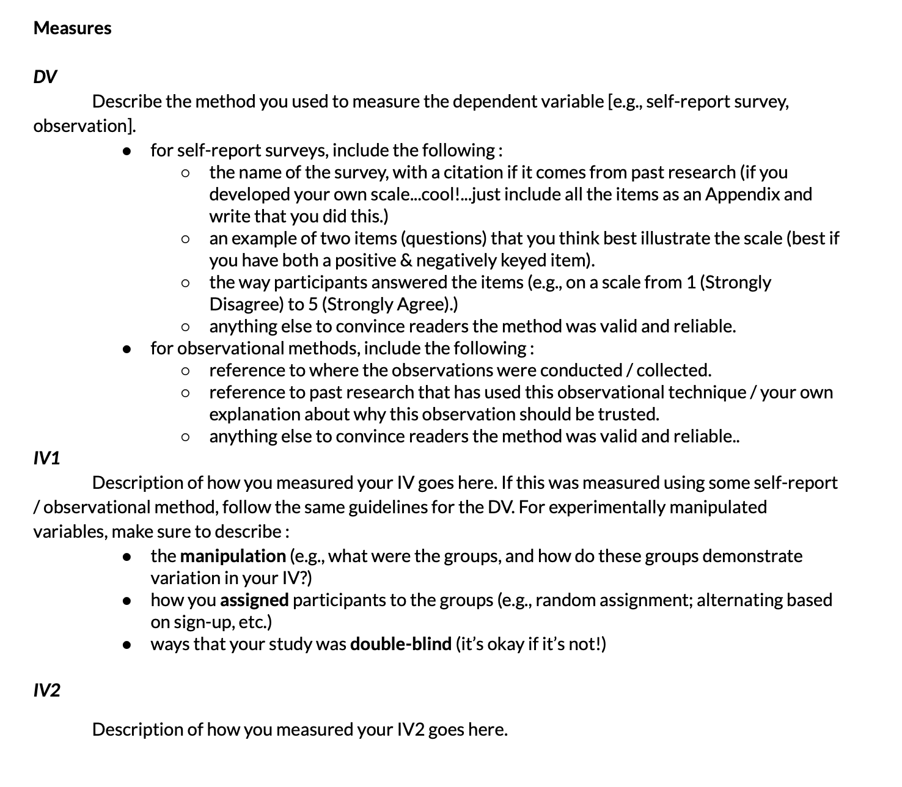
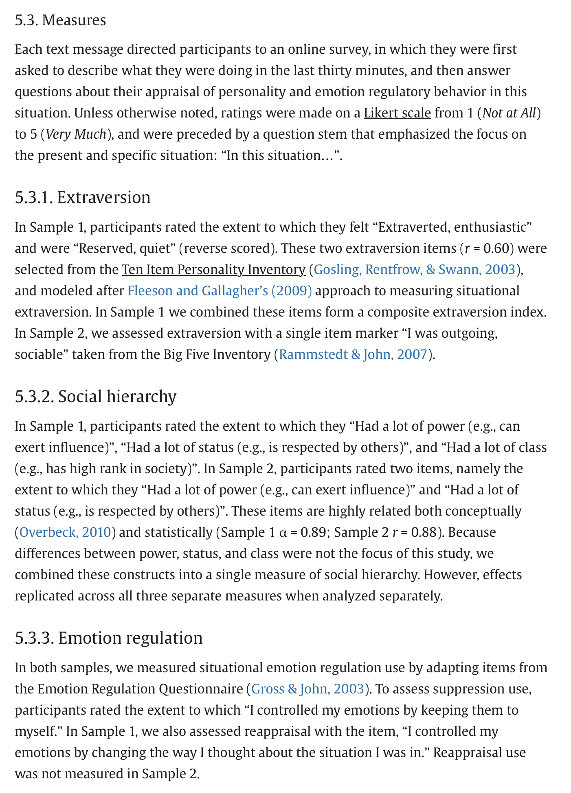

Check-In : Anchoring Data
Load the Anchoring Dataset; use R to define two (separate) linear models to determine whether people’s experience in the class (DV = howclass) is better predicted by:
- how students are doing in life (IV1 = howgo)
- how students are doing on the final project (IV2 = howproject).

Check-In Review (see Prof. R Script)
Experimental Methods
The Definition of Causality
- The cause and effect are contiguous in space and time.
- The cause must be prior to the effect. (no reverse causation)
- There must be a constant union betwixt the cause and effect. (“Tis chiefly this quality, that constitutes the relation.”) (no random chance)
- The same cause always produces the same effect, and the same effect never arises but from the same cause. (not “just” some third variable)
Manipulation : Watch out for Misleading Control Variables
RECAP : the manipulation (A/B Testing) :
researchers create multiple groups (conditions) and change ONE THING (the IV) about a person’s experience in each group & observe the result (the DV).
treatment / experimental condition : the IV is present (the change happens)
control / comparison condition : the IV is absent (the default experience / no change)
KEY IDEA : the comparison group matters!
a 3 hour stats class DECREASES boredom compared to…
a 3 hour stats class INCREASES boredom compared to…
Real-Life Examples of Difficult Control Conditions
Power Posing Study. Is this a fair comparison / manipulation? Why / why not?

Gratitude Study
Read the prompt below. Answer the following questions.
- ICE-BREAKER : What’s something that you are grateful for?
- What did the experimenters manipulate? Which of these were experimental and control conditions?
- What are some other things that differ between the experimental and control conditions (potential confounds)?
- What are some other (better) control conditions that you might include in this study?

Anchoring as an Experiment
Experimental Design : The Manipulation
| High Condition | Low Condition | Control Condition |
|---|---|---|
 |
 |
 |
Experimental Design (Other Terms)
| High Condition | Low Condition | Control Condition |
|---|---|---|
outcome = THE DV = what was being measured after the manipulation?
manipulation = THE IV = what were ALL the things that the researcher changed about a person’s experience (across experimental conditions)?
random assignment = were all possible confound variables balanced across conditions?
double-blind = did the study avoid demand characteristics (where experimenter might have influenced behavior when giving the study) & placebo effects (where participants might have acted in a certain way because they knew they were being experimented on)?
generalizability = did the study have external validity? what was the effect size (\(R^2\))?
ethics = should researchers do this type of study? (Predict & Control)
Anchoring : Question –> Theory –> Data
Question : Will the number that people see BEFORE making their own rating influence their decision?
Theory :
- OPTION A: People who see a HIGHER number before making their own rating will make a HIGHER number than people who see the LOWER number.
- OPTION B : People who see a LOWER number before making their own rating will make a HIGHER number than people who see the HIGHER number.
- OPTION C : There will be NO DIFFERENCES between the groups.
Linear Models
See Prof. R Code :)
Milestone 3 : Launch Your Study & Draft Your Measures
Milestone 3 : Launch Your Study

Milestone 3 : Draft Your Measures
Guidelines

Use Related Research as Examples

::::::
THE END.